For interactive visualisation the main tools are Juicebox and HiGlass
In this workshop we are going to focus on HiGlass;
Local HiGlass Server: http://bifx-core3.bio.ed.ac.uk:32771/app
Official HiGlass Server: https://higlass.io/app
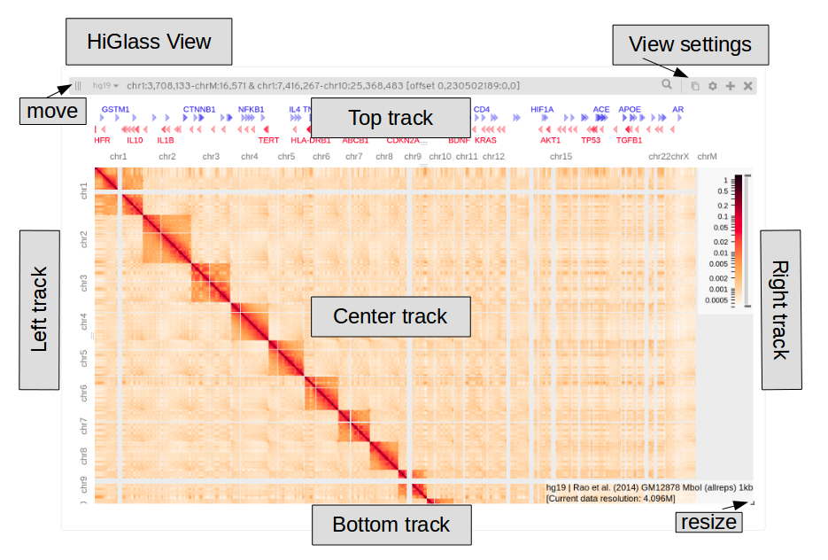
This is a single HiGlass view, tracks can be added to the centre (typically a matrix here) and to the top, bottom, left or right. The view settings are in the upper right corner, note that each track has it’s own settings menu. You can open multiple views, these can be resized (bottom right) and moved (upper left).
Basic Operations
Click to open full screen app
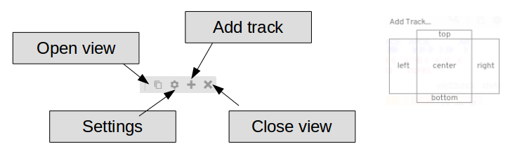
Lets load some data and annotations
Try loading a matrix into the centre of the view
Select; Rao et al. (2014) GM12878 Mbol (allreps) 1kb
Load as a heatmap (2d-tiles shows underlying aggregation) 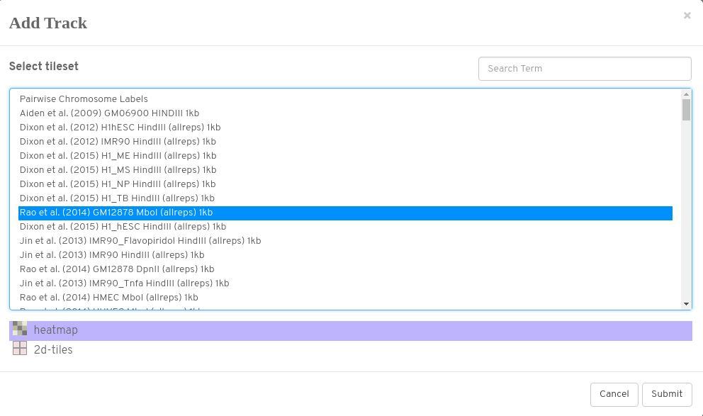
Don’t forget to add chromosome annotations (normally to at least the top track)
Here we want hg19
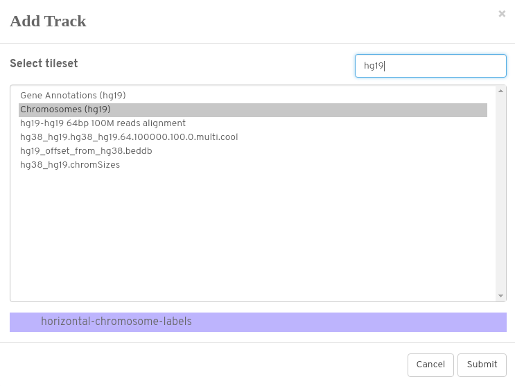
You should be looking at something like this;
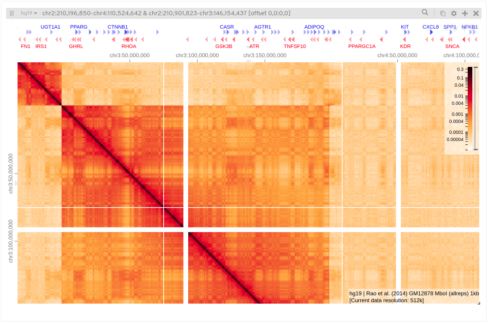
Here I’ve added chromosome annotations to the top and left tracks, I’ve also added hg19 gene annotations to the top. The text in the lower right of the matrix tells us information about the sample and the current resolution.
What happens if you add a matrix to the bottom? (you might need to close centre track/resize bottom)
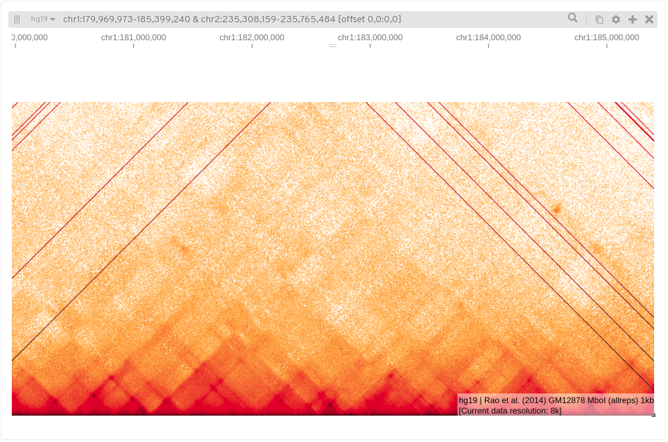
Now that we have data in front of us, lets see if we can identify some features, we’ll start by looking at a single chromosome then progressively zoom in. We are still working with the Rao data, try and follow along and see if you can see these features for yourself.
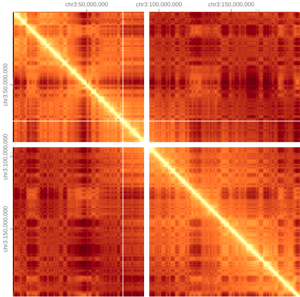
Once we ‘zoom’ into a single chromosome, one of the most notable features is this checkerboard or plaid pattern, this partitioning into alternating genomic compartments is observed across the genome, these are refered to as A/B compartments.
This can be seen more clearly in the original Hi-C paper;
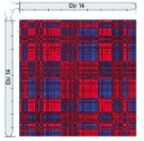
Pearson Correalation, Lieberman-Aiden (2009)
These compartments are identified by principle componants but also correspond with chromatin state, gene density, GC content and histone markers. Arbitrarily, A Compartments are defined as open gene dense regions (euchromatic), and B compartments as closed gene poor regions (heterochromatic).
Subcompartments have also been identified but the method is not yet available, this requires billions of reads.
Moving in closer to the diagonal we notice square blocks of interactions (<1 Mb), (resolution is 32k).
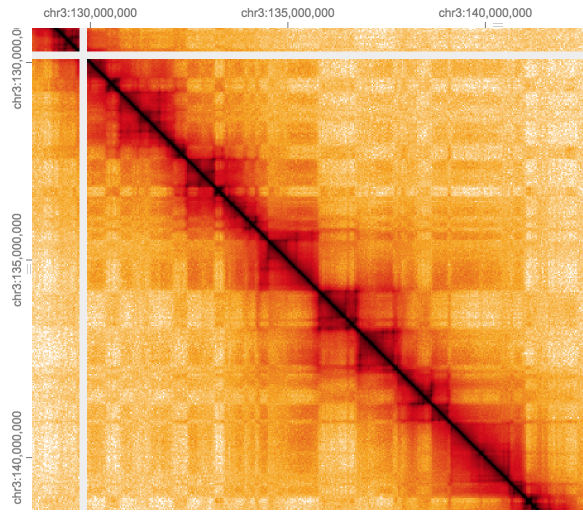
These contact domains are often refered to Topalogically Associated Domains (TADs), they are regions which interact more which each other than with neighboring regions either up or downstream along the diagonal.
It can be difficult to define these boundaries precisely, both by eye or using a TAD caller, particularly when they seem to have a nested structure.
TAD callers comparison from Forcato et al. 2017. Here each view shows Rao data as matrix (all reps) and bottom tracks show output of that TAD caller on each replicate.
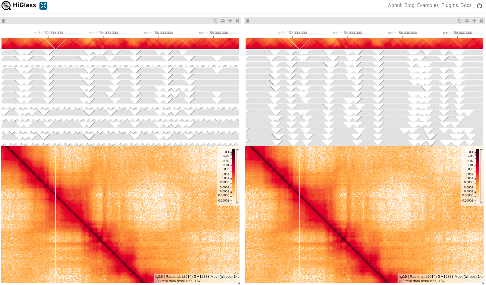
Here we can see TAD’s as blocks drawn onto the matrix, here just looking at a single sample.
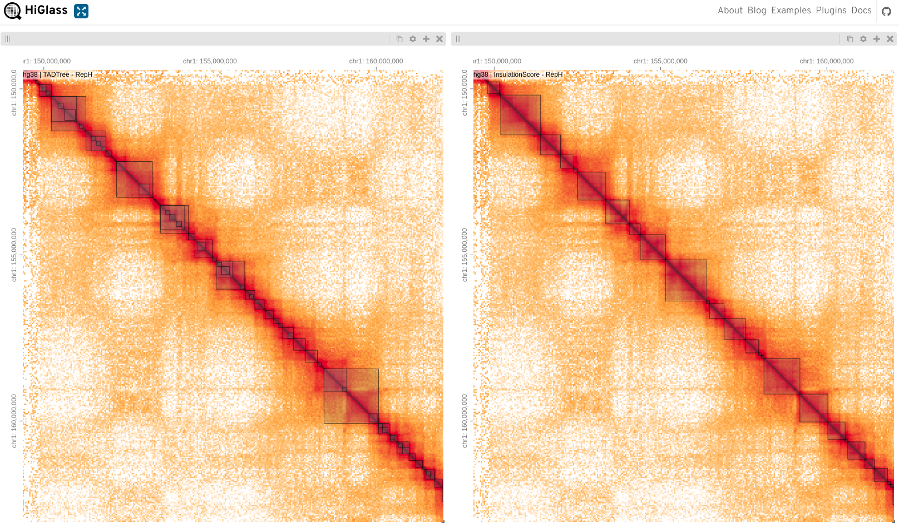
Zooming in further (4k) to these domains we may see enriched areas as dark spots.
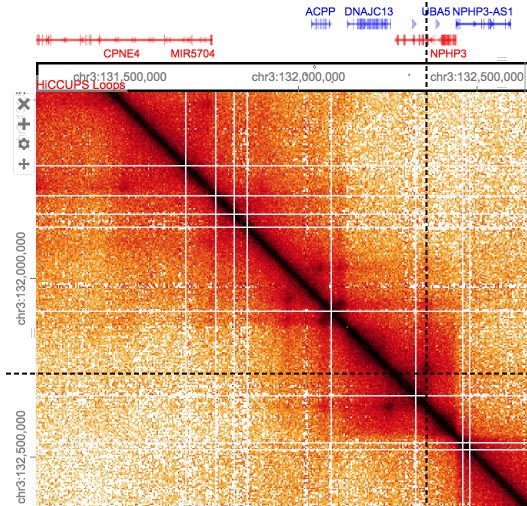
Loops are at a smaller scale (80kb-500kb) and harder to see by eye, these enriched points of interaction are often seen as a corner peak.
Note that loops close to the diagonal may be underestimated/missed due to noise, conversely loops called at longer ranges may be false as the background here is so sparse. Loops callers which compare points against the local background aim to alleviate this.
These maps alone are purely qualatative, but they DO allow us to detect patterns and identify regions of interest. Tools can be used to identify the above features computationally, giving output in conventional 2D tracks, these in turn can be analysed by standard bioinformatics methods.
Here I’m zooming in on my favourite gene, Sonic Hedgehog.
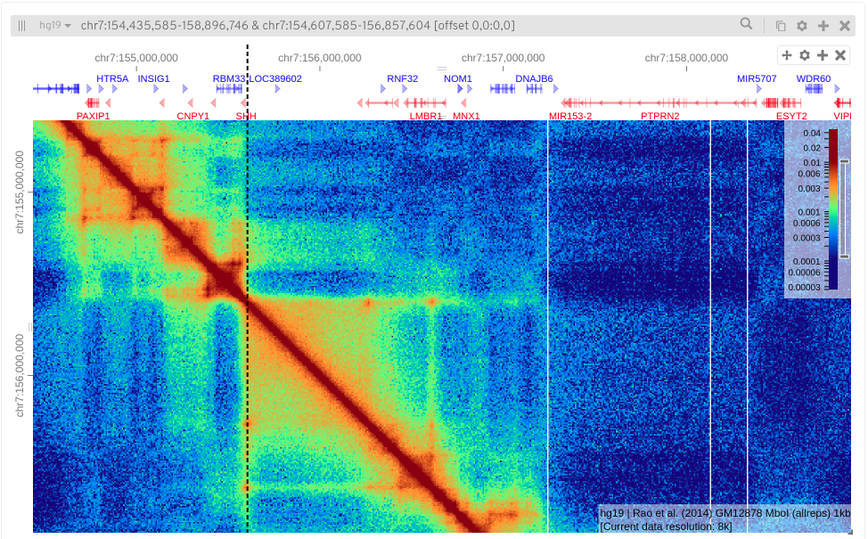
See if you can find your favourite gene.
Hint: 'Toggle position search box' in View settingsAs well as displaying annotations you can also add other genomic data tracks of interest (e.g. from ChIP-Seq experiments).
Try adding additional tracks on the horizontal axis
(e.g. CTCF peaks from Encode)
Right click in a matrix to add rules/cross sections
Can you see any interesting features?Are there relevant annotations available to add to your view?
Hint; HICCUPS Loops overlayed on matrix
Can you change the colour map for a matrix (Matrix settings/Configure Series/Colour Map)
Above I’ve gone for ‘Jet’ blue
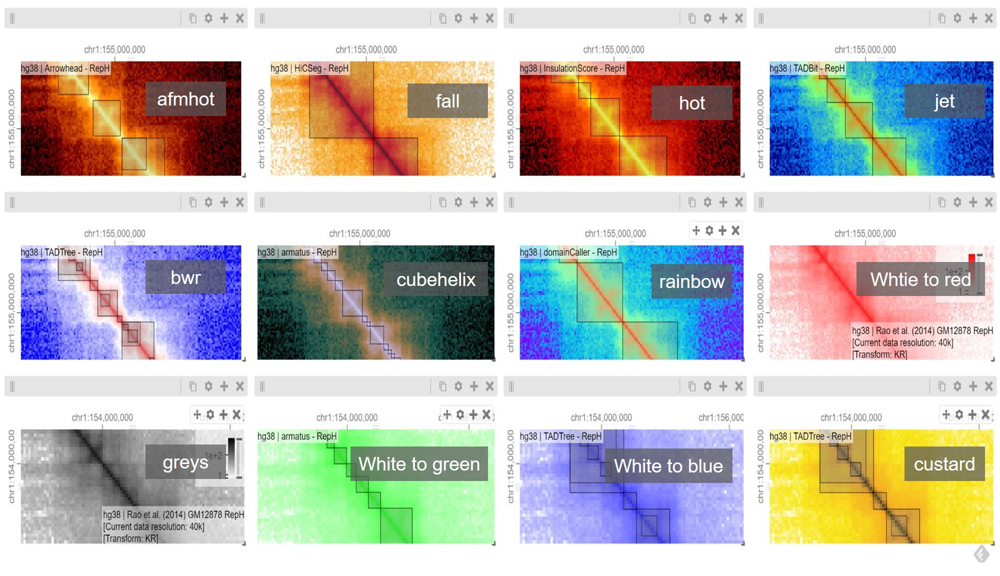
What happens if you adjust the colour intensity bar?
If you want to save what you find just ‘save views as Link’ in the view option, this gives you a shortcut.
Let’s look at some more advanced features using multiple views in HiGlass. Let’s say we want to compare two samples, it would be useful to compare the same region at the same resolution simultaniously.
One of the most useful features of HiGlass is to take the position and/or zoom level (resolution) from another view and apply it to the current view, this can also be locked so both views are synced together.
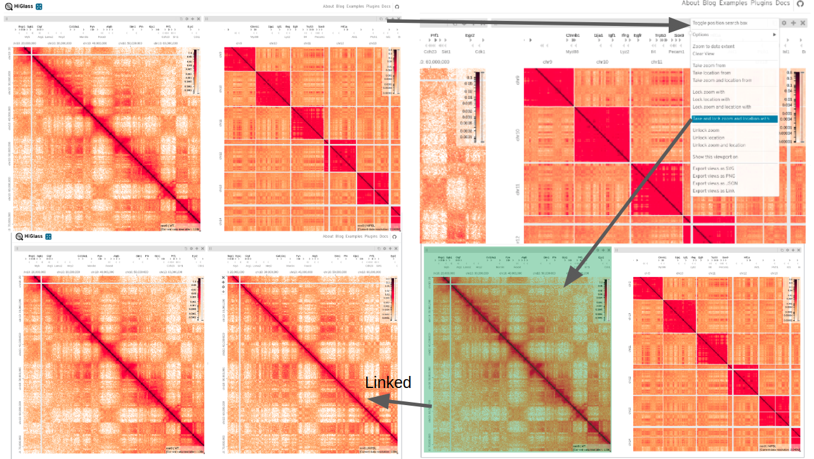
Open another view (copies current view) and open settings menu
Select ‘Take and lock zoom and location with’
Choose the matrix you want to copy zoom/location from
These views are now linked.
Another useful feature is to zoom into an area and display this on another view, i.e. ‘Show this viewport on’
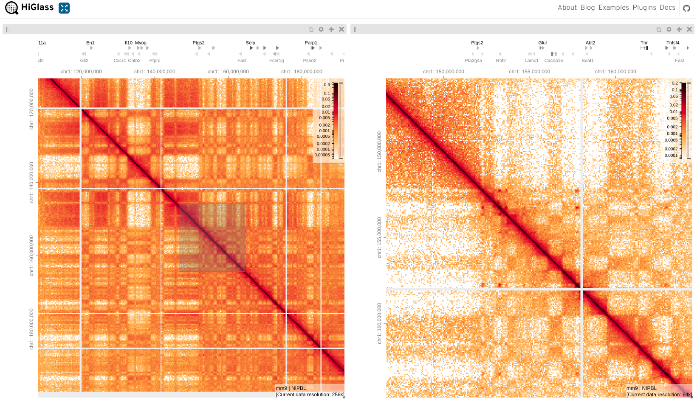
Open settings menu on one of the views
Select ‘Show this viewport on’
Make sure the zoom level isn’t locked
Choose the matrix you want to copy zoom on
The shaded area shows the extent of the zoomed view
Let’s put everything you’ve learned into practice, using some different data.
Here we are comparing a Wild Type and a cohesion loading factor Nipbl deletion matrix, see if you can re-create this figure from the HiGlass paper based on Scharzer et al. (2017).
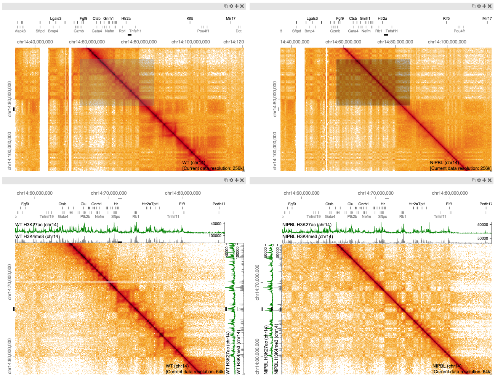
Clear all current views/annotations
‘Clear View’ shortcut in view settings.
Load each data set ‘Scharzer et al (2017) NIPBL / Scarzer et al (2017) WT’
Resize view before opening to get views in portrait
Add chromosome/gene annotations (Mouse mm9)
Navigate to the region of interest (in both views)
~chr14: 40,000,000 - 100,000,000
Zoom on this region using viewports (in new views)
~chr14: 60,000,000 - 80,000,000
Add additional tracks
Here RNA-Seq H3K27ac & H3K4me active histone marks for WT & Nipbl
Can you find differences?see this figure from the paper; 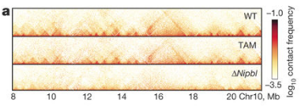
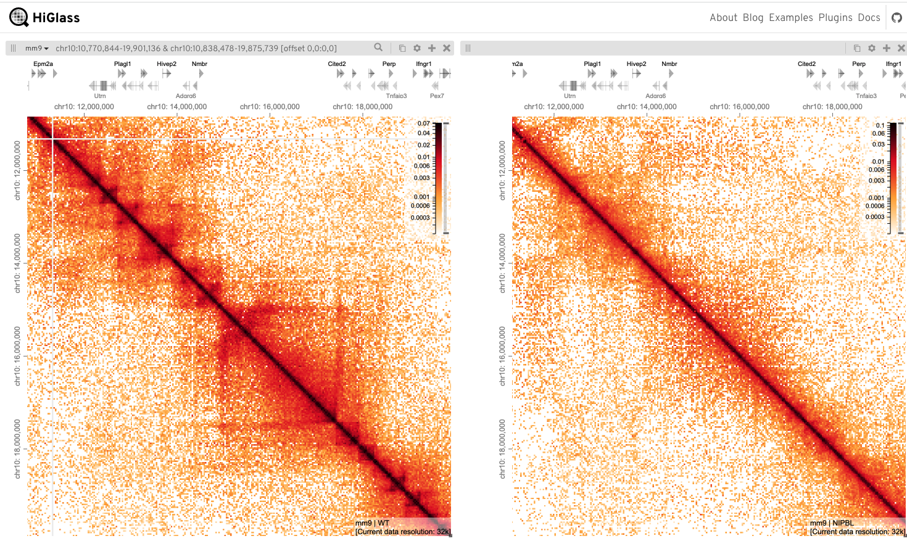
HiC-Pro can also be run via a NextFlow pipeline, this runs all the above steps and includes some additional downstream analysis.
List of all HiCExplorer Tools
Cooltools is also a highly recommended package for analsis of cool files.
For a more detailed demo of Juicebox see this
For Micro-C analysis I’d recomend using Micro-C Tools
A useful exhaustive list of further tools can be found here.